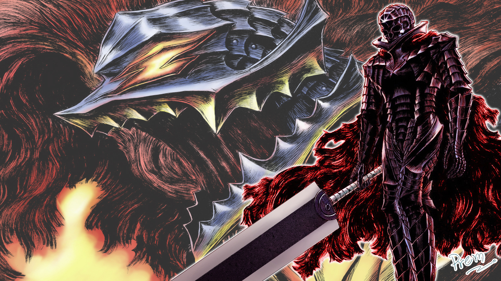

A Saga da Espada do Destino é uma das sagas mais conhecidas e a base da história de Guts. Ela começa com Guts como um mercenário, enfrentando vários inimigos e suas próprias batalhas internas, até o ponto culminante da Ascensão do Falcão. A saga também introduz o Band of the Hawk, Griffith, Casca, e a trágica transformação de Griffith, levando à Eclipse.

Esta saga trata da jornada de Guts após a tragédia do Eclipse, a busca pela vingança contra os Apostolos e, especificamente, contra Griffith. A saga apresenta a marca da maldição e também mostra Guts enquanto tenta lidar com seus sentimentos e o sofrimento da perda. Além disso, introduz personagens como Farnese e Serpico, que se tornam parte do grupo de Guts. A saga termina com o Eclipse e a revelação da verdadeira natureza de Griffith, onde o Band of the Hawk é destruído.


Guts continua sua jornada, agora com seus aliados, incluindo Puck, Farnese, Serpico, Isidro e Schierke, após o Eclipse. Esta saga aborda principalmente o processo de cura de Guts e Casca, além da luta contra os Apostolos e a luta para restaurar a saúde mental e emocional de Casca. Um dos marcos importantes é o encontro com o Cavaleiro do Apocalipse, que começa a aproximar Guts e seus amigos do confronto final com Griffith.
Esta saga mostra a ascensão do império de Griffith e sua busca por poder, enquanto Guts e seus aliados continuam a lutar contra as forças do mal. Esta parte do enredo é central para a construção do império de Griffith, suas interações com os Apostolos e sua tentativa de obter um novo poder, envolvendo o avanço para o Mundo das Formas. Ao mesmo tempo, o grupo de Guts continua sua jornada em busca de mais poder para derrotá-lo.

Nessa parte da história, Guts e seus amigos vão mais fundo no mundo das trevas, enfrentando adversários sobrenaturais e mais perigos dentro do mundo espiritual. A saga também explora o destino de Casca e os efeitos das marcas do sacrifício em cada personagem. O grupo de Guts se aventura em um território cada vez mais distorcido, lidando com novas ameaças e com o desenvolvimento espiritual das personagens.

Esta saga se concentra nas consequências da guerra contra Griffith, com foco na evolução das forças sobrenaturais que tentam dominar o mundo. A busca por respostas se torna ainda mais intensa à medida que Guts e seu grupo se aproximam de uma batalha final com forças além da compreensão humana. O combate com Apostolos e os problemas internos de Guts continuam a ser temas centrais.